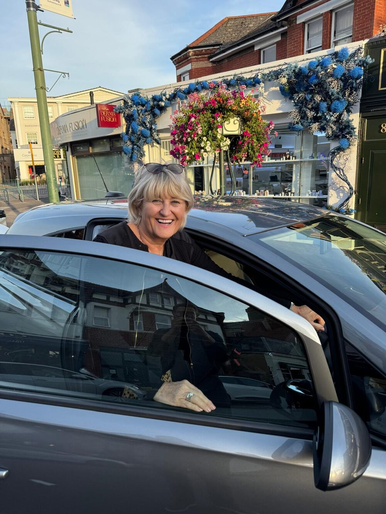
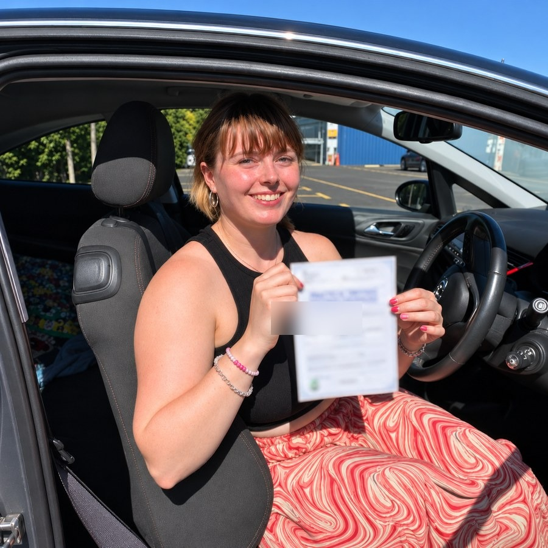
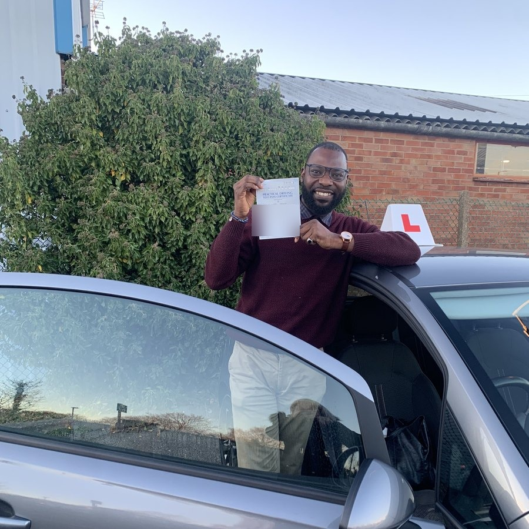

No gears
Cars are going automatic, so gears are stress you don't need. No clutch. No stalling. You just drive. Easy.
Gillian is calm, patient and has taught people to drive for 30 years. She holds the DVSA's top grade, and learners often praise her patience. Never driven, or had your confidence knocked? You're in the right place.

If you've never driven
"Initially I was very anxious but Gill was amazing and had so much patience."Lydia-Rose W.
Maybe you've put it off for years. Maybe the thought of a busy roundabout makes your stomach turn. Maybe everyone you know passed at 17 and you feel behind.
Being nervous doesn't mean you'll be bad at it. It means you need someone patient in the passenger seat.
You start somewhere quiet, in an automatic, with Gillian next to you and her own set of pedals. You go at your pace. Nothing happens until you're ready.
Tell Gillian you're nervousIf you've nearly given up
"I was so close to giving up. She got me back on track, and I passed."Zoe M.
Maybe your last instructor rushed you, or kept cancelling. Maybe you failed a test and stopped booking.
None of that means you can't drive. It means nobody has taught you in a way that works for you yet.
Gillian is calm. She doesn't judge. She goes at your pace and tells you honestly how you're doing.
Tell Gillian what happened last timeMeet your instructor
It's all Gillian does, and she only teaches automatic. She is kind and straight with you. Her learners also say she's funny, which helps when you're nervous.
Grade A is the DVSA's top mark for instructors. Fewer than 1 in 3 have it.*
She trained as an instructor in London, where the roads are some of the busiest and hardest to drive in the country. Learn to teach there and you can teach anyone, anywhere.
And if you'd rather learn with a female driving instructor, you've found one.
Three reasons
Cars are going automatic, so gears are stress you don't need. No clutch. No stalling. You just drive. Easy.
Gillian, every lesson. Not whoever a company matches you with. Patient when you need it, honest when it helps.
An hour is over just as you get going. With 90 minutes there's no rush. You settle in, practise properly and finish on something you got right.
No pressure. Nothing to sign.
Not a call centre. Tell her where you're up to, even if that's nowhere yet. The hard bits too. She has heard it all before.
No sales pitch. She'll tell you what she thinks you need.
See how it feels, then decide. No contract. Nothing to pay up front.
Your first lesson
Why it matters
It's about not having to ask for a lift. Getting to work on your own. Picking the kids up. Going to the beach because you feel like it.
That's what you're paying for. The lessons are just how you get there.
Recent passes
From Poole and Bournemouth. There's room for yours.






In their own words
Read real feedback from people Gillian has taught.
Gill was the best possible instructor I could have asked for. Initially I was very anxious but Gill was amazing and had so much patience. I would recommend her to anyone who is a nervous driver. She's great at explaining driving concepts and is calm and supportive.
Gillian is a brilliant instructor. After several unsuccessful tests in recent years, I passed first time with Gillian after only a short time. Great value and a really attentive instructor.
After using a well known driving instructing company which felt like I was not progressing and failing tests, I was recommended Gill. I am so glad she took me on. She's brilliant, filled me with confidence, taught me so much more than the previous company which showed with a successful pass! I highly recommend Gill!
I'd really struggled with another instructor and went to a fair few tests with low confidence and nerves that got worse each time I failed. I was so close to giving up, but my dad rescued me with a recommendation for Gill. She got me back on track, helped me feel so much more confident, and I passed. A lovely lady with just the right balance.
I'd been a helicopter dad looking for that special instructor, and I dug deep before approaching AutoEasy. I came across several clients who'd had unpleasant experiences with previous instructors, then matched with Gill, regained their confidence and passed. Kind, empathetic, patient, genuinely outstanding. My son passed. Don't bother with anyone else.
I'd had lessons at 17 with an awful instructor. It knocked my confidence and put me off until I was nearly 30. Tried again, gave up. At 35 I went third time lucky and it worked. Passed first time. I felt like giving up on a few occasions and Gill gave me the confidence to stick at it. I can't thank her enough.
Gillian is a highly skilled driving instructor with lots of patience and kindness. She has a wicked sense of humour, making every lesson fun. I looked forward to seeing her each lesson, instead of dreading it like I did with my last instructor. I've had many bad experiences with other driving instructors, letting me down, cancelling or rearranging a lot, and smashing my confidence. Gilli gave me the confidence and believed in me. She was so genuinely dedicated to getting me to test standard and was always by my side supporting me along the way. I passed my test, all thanks to Gillian. I couldn't recommend AutoEasy enough! Great value for money as well.
I got my driving license with Gillian and I'm incredibly grateful to her! She was so attentive during lessons she spotted my mistakes and made sure we focused on them, which made all the difference. Thanks to her, I never repeated the same mistakes again. She doesn't just focus on helping you pass the test; she genuinely wants you to become a good, safe, and courteous driver. I'm so glad I met her. I had failed my test before because my previous instructor didn't teach me the most important points, but Gillian is absolutely the best at what she does.
I passed first time and I couldn't be more grateful to Gill! After feeling stagnant and low in confidence with my previous instructors, Gill was amazing in building me into an assured and safe driver. I learnt a great deal from her and would highly recommend her to anybody! She taught me with clarity and patience, ensuring that any problems I had were cleared up effectively. As someone who has anxiety, her incredible support (and sense of humour) throughout really helped me believe in myself. Thank you again so much Gill. Kayla x
Gill helped me so much, building up my confidence on the road and making me believe I could actually drive. I had come from another driving school using a manual car, but Gill really turned things around. Gill was very patient with me and always had something funny to say, which put me at ease. I found driving an automatic so much easier and would highly recommend learning with AutoEasy.
I was so pleased to pass my driving test first try thanks to Gill's great teaching. After several years trying and struggling to learn manual, I made the change to automatic and was really put at ease with Gill's calm but firm style. She really helped me build my confidence on the road and got me driving comfortably. Gill's experience and great advice has paid off in full and I'm happy to get behind the wheel on my own having learned from such a great instructor.
What it costs
for a 90-minute lesson
Learning properly once costs less than learning twice.
Before you book
You're not. Nobody is good at something they haven't been taught yet. Gillian has had learners who failed several tests elsewhere and then passed first time with her.
No. Gillian teaches a lot of nervous learners. Kay wrote that, as someone with anxiety, Gillian's support "really helped me believe in myself". She passed first time.
Gillian has her own brake, so she can stop the car at any moment. She's calm, she doesn't judge, and after 30 years there isn't a mistake she hasn't seen.
It depends where you're starting from. Anyone who gives you a number before they've seen you drive is guessing. After your first lesson, Gillian will tell you what she thinks.
Yes. Luke had several unsuccessful tests before he came to Gillian. He passed first time with her.
For most people it's easier to drive, yes. There's no clutch and no gears to think about, so you can't stall and you can keep your mind on the road. Emma came to Gillian from a manual driving school and found automatic "so much easier". Kate struggled with manual for years, switched, and passed first try.
No. An automatic licence is for automatic cars. If automatics are all you plan to drive, it's all you need.
No. People learn at every age. Gemma first had lessons at 17, tried again at nearly 30 and gave up. At 35 she came to Gillian and passed first time.
No. You can start as soon as you have your provisional licence. You need to pass your theory before you can book the driving test, and Gillian can help with that.
Most learners here take it at the Poole test centre. Gillian gets you used to the roads around it well before the day.
Gillian teaches across Poole and Bournemouth, including Branksome, Parkstone, Broadstone, Westbourne and Canford Cliffs. Not sure? Message and ask.
One dad did his homework before he chose Gillian for his son. His son passed. His advice to other parents: "Don't bother with anyone else."
Who Gillian teaches
Every lesson is one-to-one with Gillian in a dual-control automatic.
Never driven? Good. No bad habits to undo.
Bad experience last time? Fresh start. No judgement.
Gillian is known for helping nervous drivers. Calm and patient.
Fed up with gears? Take them away.
Mock tests and theory help, so nothing is a surprise.
Refresher and motorway lessons to get your confidence back.
Not sure which one you are? Message Gillian and tell her where you're at.
Where Gillian teaches
That takes in BH4, BH12, BH13, BH14, BH15 and BH18. Not sure if you're covered? Message and ask.
Find the lessons that suit you
Explore where Gillian teaches and how she helps nervous and returning learners. The same patient instructor, automatic car and one-to-one approach whichever page you start on.
Learn about 90-minute lessons with Gillian and her approach to teaching around Poole.
Poole driving lessonsFind out about automatic tuition in Bournemouth, Westbourne, Talbot and nearby areas.
Bournemouth driving lessonsIf you're worried about your first lesson, starting again or switching from manual, begin here.
Lessons for nervous driversGet started
Send Gillian a WhatsApp. She replies herself, usually the same day, and you only book one lesson to start.
Not sure what to say? Just send:
"Hi Gillian, I'd like to start driving lessons."